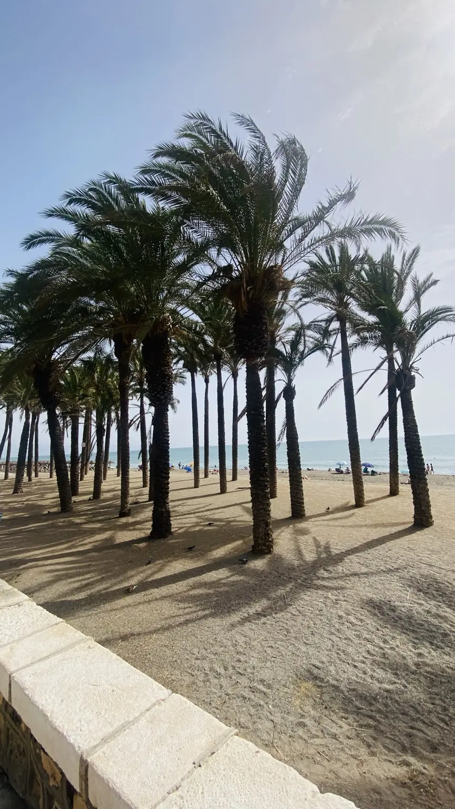

Stories
A city cannot be discovered through a single photograph. Original stories, context, memory and ways of living by the Mediterranean.

Christmas and New Year in Torremolinos and Málaga
Calle Larios, the Cathedral, the Jardín de Oz and the calendar we know so far, distinguishing confirmed announcements from pending traditions
Read dossier in Spanish ↗
Torremolinos, much more than sun and beach
Beyond the postcard: history, sea, neighbourhoods and the city that exists outside summer
Read story ↗
La Nogalera, where the night has a history
The story behind one of the best-known LGBTQ+ nightlife areas in the Mediterranean
Read story ↗
Pasaje Begoña, a memory of freedom
The documented history of a space for coexistence and the repression of 24 June 1971
Read story ↗
San Miguel: the celebration that brings Torremolinos into the streets
Pilgrimage, fair and procession: September’s celebration explained through official sources
Read in Spanish ↗
Welcome to the Paradise: a city you can listen to
A musical article with a preview of Next Stop: Torremolinos and complete editions in six languages
Read and listen ↗Cross-checked information, visible sources and open corrections. We do not invent interviews, venues or events; sponsored content will be clearly labelled. Original articles are published first in Spanish. Full translations will follow after language review.